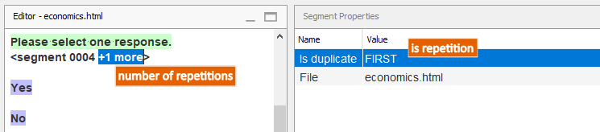
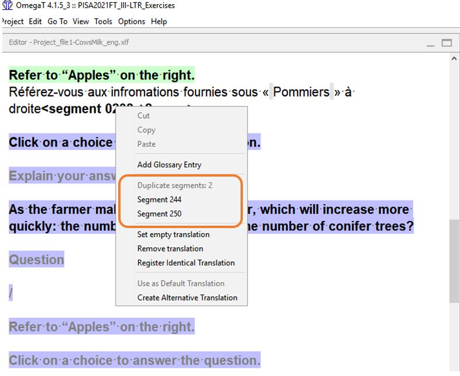
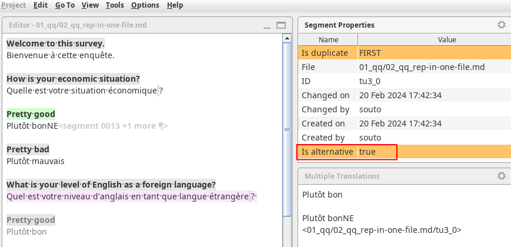
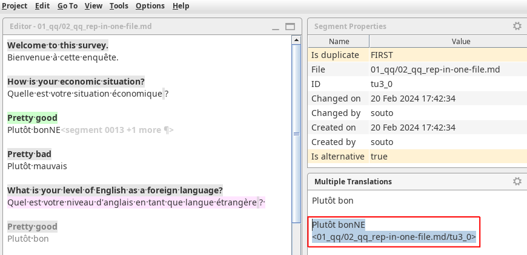
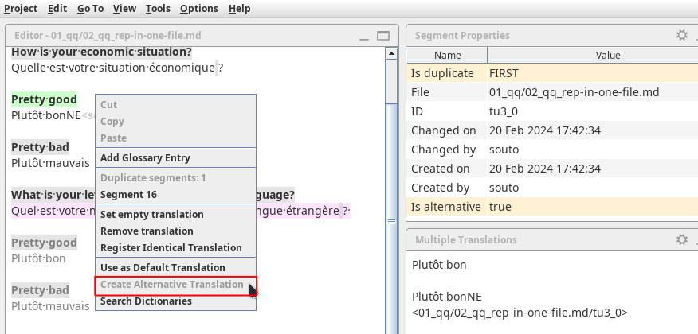

Работа с повторами¶
Некоторые сегменты в проекте могут повторяться. По умолчанию перевод, введенный в одном из повторяющихся сегментов, используется автоматически во всех повторах.
Определение повторяющихся сегментов¶
Определить, является ли текущий сегмент повторяющимся, можно по тому, что область Segment Properties (Свойства сегмента) будет содержать поле isDup со значением FIRST для первого сегмента в группе повторов и NEXT для всех последующих.

Кроме того, маркер текущего сегмента, в котором отображается его номер, также содержит информацию о том, сколько повторов имеется у текущего сегмента.
Второй и все последующие повторы выделяются серым шрифтом, благодаря чему можно определить, что такие сегменты повторяются в проекте.
Если щелкнуть правой кнопкой мыши по повторяющемуся сегменту, в контекстом меню будет список всех его повторов. Он дает возможность перейти к другим повторам (для этого нужно выбрать соответствующий пункт контекстного меню). Таким образом вы можете просмотреть контекст, в котором повторяющийся сегмент используется в проекте.

Автоматическое использование переводов¶
При редактировании перевода повторяющегося сегмента следует помнить о том, что как только изменения будут сохранены, они автоматически отобразятся во всех повторах сегмента в проекте.

Создание альтернативного перевода¶
В некоторых случаях перевод повторяющегося сегмента должен быть разным в зависимости от контекста. В такой ситуации возникает необходимость изменить перевод только в одном из повторов, не меняя при этом перевод всех остальных.
Другими словами, вам необходимо создать вариант перевода (или альтернативный перевод), который не будет распространяться автоматически на все остальные повторы.
Для создания альтернативного перевода выполните следующие действия:
- Щелкните правой кнопкой мыши по текущему сегменту и выберите пункт контекстного меню Create Alternative Translation (Создать вариант перевода).
- Отредактируйте перевод текущего сегмента.
- Нажмите Ctrl+S для записи альтернативного перевода.
В области Multiple Translations (Варианты перевода) будут показаны варианты перевода текущего текста оригинала.
Вкратце процесс создания альтернативного перевода выглядит так:
Опасность
Альтернативные переводы могут оказаться коварными при неправильном применении. Если вам нужно создать альтернативный перевод, точное выполнение трех описанных выше шагов является обязательным.
В следующем видео показано, как создавать альтернативные переводы. Приятного просмотра .
Предупреждение
Если перевод сегмента уже является альтернативным, то создать альтернативный перевод такого сегмента будет невозможно. В приведенном ниже разделе описано, как определить, является ли перевод текущего сегмента альтернативным.
Если необходимо изменить существующий альтернативный перевод, просто отредактируйте его и сохраните изменения (Ctrl+S).
Определение альтернативных переводов¶
Определить, является ли перевод текущего сегмента альтернативным, можно следующим образом:
Во-первых, если сегмент содержит альтернативный перевод, в области Segment Properties (Свойства сегмента) будет содержаться поле isAlt со значением true. Это поле будет мигать оранжевым при переходе к такому сегменту или при сохранении проекта, если такой сегмент будет в этот момент активным.

Во-вторых, в области Multiple Translations (Варианты перевода) будут отображаться варианты перевода и контекст, к которому они привязаны (обычно альтернативные переводы привязаны к имени файла и дополнительным идентификаторам, например ID или ключу сегмента).

И наконец, наиболее выразительно наличие альтернативного перевода видно по тому, что вы не сможете выбрать пункт Create Alternative Translation (Создать вариант перевода) в контекстом меню сегмента или в меню Edit (Правка), так как он будет неактивным.

Восстановление перевода по умолчанию¶
Если по какой-то причине существующий альтернативный перевод стал ненужным, и вы хотите, чтобы перевод сегмента стал таким же, как в других повторах, проще всего просто удалить текущий вариант перевода. Для этого выполните следующие простые шаги:
- Перейдите к сегменту, в котором вы хотите восстановить перевод по умолчанию
- Нажмите сочетание клавиш Ctrl+A, чтобы выбрать весь переведенный текст
- Нажмите клавишу Del, чтобы удалить перевод
- Нажмите сочетание клавиш Ctrl+S для сохранения изменений или перейдите к другому сегменту, чтобы восстановить перевод по умолчанию